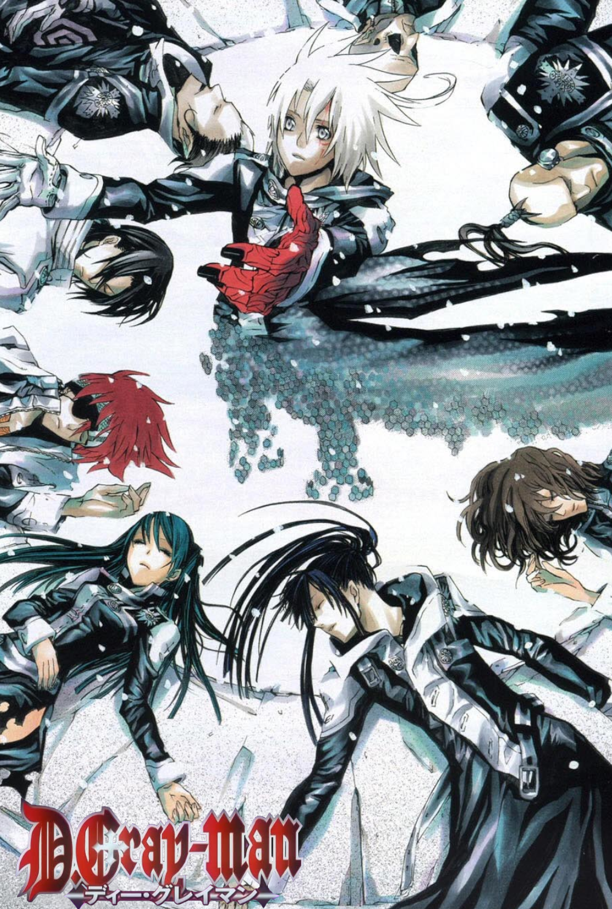
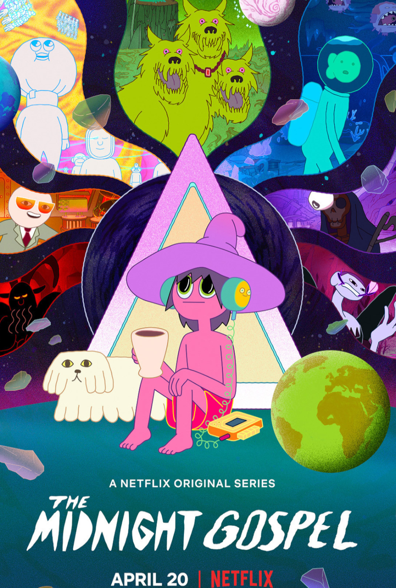
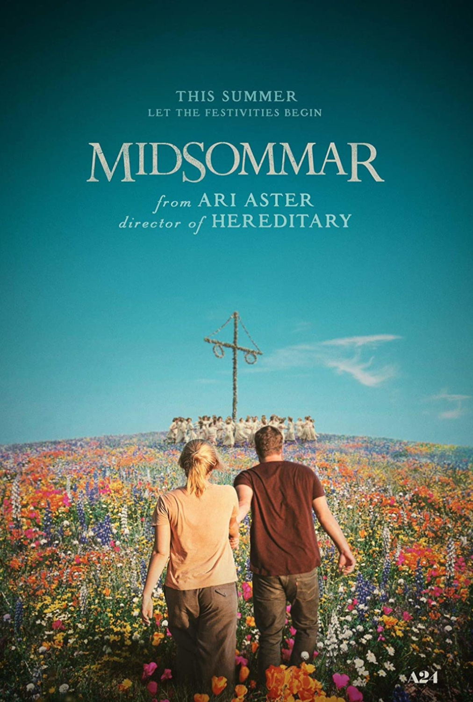
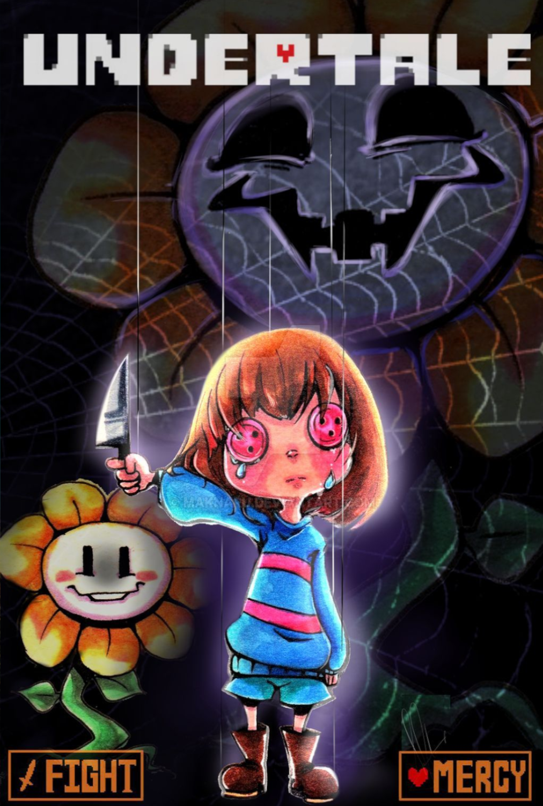
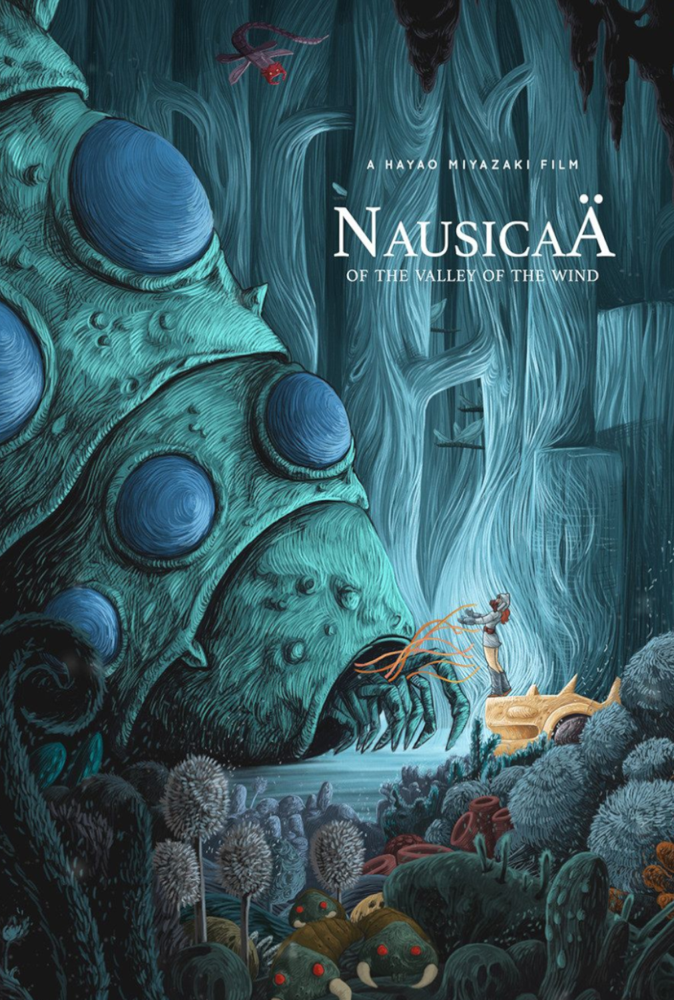

VIDA
Aqui vou falar um pouco do que eu gosto, e recomendar esse conteúdo também.
Espero que pelo menos pra uma pessoa, um desses tópicos sejam interessantes, mas de toda forma, espero que gostem.
Esse jogo é um sofrimento, não entendo até hoje porque eu jogo isso,
não joguem esse jogo se vocês estão sem paciência, ou pra "relaxar", isso não vai acontecer.
(D.gray-man) Isso daqui é uma das coisas mais bonitas que ja assisti, coisa boa, recomendadíssimo!
A história não acabou até hoje, mas a cada capítilo é um plot-twist diferente do outro, além
da trilha sonora ser maravilhosa(no anime).

Midnight gospel é uma animação extremamente frenética e viajada, tem umas reflexões bem
interessantes acerca de de vários temas, ela é bem subjetiva e bem daora.

Este filme é uma das dádivas do século 21, mas é pesado, tem uma dosagem de gore e de suspense, mas sendo sincero, a mensagem
é bem passada por causa dessas características dele, então pra quem animar de assistir, vai com tudo XD

Se você vive numa caverna, ou só não tem costume de jogar alguma coisa mesmo, então você muito provavelmente não ouviu falar desse jogo.
Minha recomendação é que você só jogue, só vai, aproveita sua jornada.

Eu iria recomendar todos os filmes do Studio Ghibli, mas por que não começar pelo começo? Bom, se nunca viu nada ou se quer começar,
Nausicaa é um belo filme pra isso, já que particularmente acho que tem uma bela trilha sonora, e uma história simples mas minimamente interessante e bonita.
